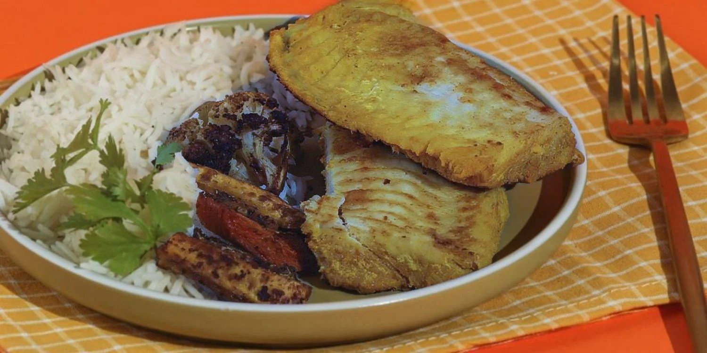
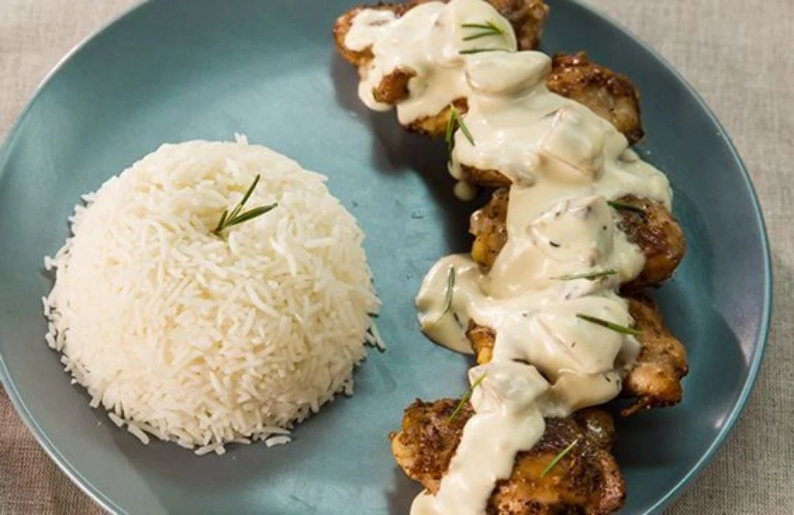

وجبات البروتين
دجاج مشروم
من 13 ر.س
أسلوب الحياة — مطعم مأكولات صحية
وجبة تحبّها، واختيار يناسب يومك.
اكتشف نكهاتنا، اختر حجمك، وخلّ الباقي علينا.

ابدأ بشي تحبّه

التنوع هو أحلى جزء.وجبتك، بتفاصيلك
من الدجاج بالمشروم والكاري، إلى السلمون والروبيان والكباب الهندي. اختر طبقك، وحدد الحجم، وأضف الأرز أو الجانبيات اللي تحبها.
كوّن طلبكرتّب وجباتك من بدري
حدد تفضيلاتك وعدد الوجبات، واستفسر عن الاشتراك المناسب مباشرة من المطعم.
خصص طلب اشتراكوجبات · أحجام · طريقة استلام
الباقات والأسعار حسب المتاح لدى المطعم.
مساحة للطعم في البيت
قرمشة الخيار، طراوة الحمص، ولمسة ليمون تجمع الطبق.
المقادير والطريقةصينية بسيطة تجمع ألوان الخضار ونكهة الأعشاب.
المقادير والطريقةفطور بارد ترتبه من المساء وتضيف له فاكهتك المفضلة.
المقادير والطريقةقبل ما تطلب
اختر الأصناف وأحجامها وأضفها إلى قائمة طلبك. راجع التفاصيل، ثم افتح رسالة واتساب لإرسالها بنفسك. يؤكد المطعم السعر والتوفر وطريقة الاستلام قبل تجهيز الطلب.
الأسعار المعروضة استرشادية وقد تختلف حسب الفرع وقناة الطلب. يؤكد المطعم الإجمالي ورسوم التوصيل إن وجدت قبل اعتماد الطلب.
حدد المدة وعدد الوجبات وطريقة الاستلام في صفحة الاشتراكات. يتواصل معك المطعم لتوضيح الباقات المتاحة والأسعار وسياسة التعديل والتوقف.
تواصل مع المطعم قبل الطلب للتأكد من المكونات واحتمال التلامس أثناء التحضير. أسماء الأطباق والصور لا تشكل قائمة كاملة بمسببات الحساسية.
الوصفات المنشورة أفكار منزلية مستقلة للتجربة في البيت، وليست وصفات المطعم الخاصة ولا تمثل معلومات غذائية عن وجباته.
للوجبة الجاية